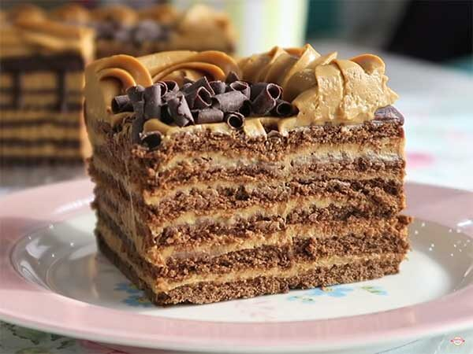

Chocotorta Rocher
Ingredientes:
- 3 paquetes de galletitas Chocolinas.
- 1 pote de dulce de leche repostero.
- 1 pote de queso crema.
- 1 pote de pasta de Ferrero Rocher.
- 1/2 taza de café/licor o leche.
- C/n de ralladura de chocolate.

Preparación:
- Mezclar el dulce de leche con el queso crema.
- Remojar las galletitas en el café, o lo que hayan elegido.
- En un molde, colocar las galletitas una al lado de la otra formando una base.
- Colocar la mezcla de dulce y queso formando una capa.
- Hacer el mismo procedimiento con las galletitas, intercalando las capas.
- Bañar la preparación con Ferrero Rocher, trocitos de chocolate y llevar a la heladera.
- Desmoldar, cortar y servir. ¡A disfrutar!